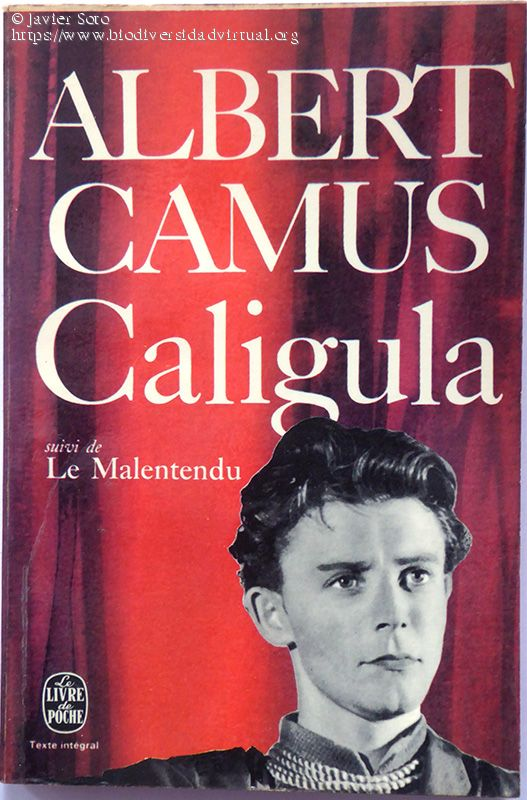

 Albert Camus es un escritor al que nunca he dejado de admirar. A lo largo de su carrera demostró sus dotes como novelista, ensayista, articulista y, también, como dramaturgo, es decir, un auténtico todoterreno literario. Aunque sus obras de teatro no tuvieron en su momento la influencia ni causaron el mismo impacto que las de Jean Paul Sartre, no dejan de ser admirables, en mi opinión, al igual que el resto de su obra. Calígula fue la primera obra de teatro escrita por Albert Camus, lo que la inscribe en el periodo más pesimista de su carrera, el conocido como ciclo del absurdo. Pese a haber sido escrita en 1937, se representó por primera vez en 1945 y Camus siguió trabajando en ella hasta darle su forma definitiva en 1957, veinte años después de su primera versión, lo que es una señal inequívoca de que esta obra tenía un significado muy especial para él. Yo he tenido la suerte de poder ver esta obra representada hace muy poco, en la versión que de ella ha hecho Joaquín Vida con su grupo Cosmoarte, y magníficamente interpretada por un reparto de actores muy convincentes, compuesto por Javier Collado Goyanes (Calígula), Alejandra Torray (Cesonia), Fernando Conde (Helicón), Héctor Melgares (Escipión), José Hervás (Quereas), Antonio Gálvez (Lépido), César Sánchez (Senecto/Casio), Ángel García Suárez (Metelo), Xabier Olza (Mucio) y Aurora Latorre (esclava). El drama arranca con un Calígula que ha desaparecido del palacio y quien toda su corte anda buscando, sospechando que su desaparición está relacionada con la muerte de su hermana Drusila, a quien amaba profundamente y con quien mantenía relaciones incestuosas. Cuando Calígula regresa al palacio, no parece la misma persona. Quien en apariencia había sido un gobernante inocente, joven, amable y, sobre todo, manejable por su corte de consejeros, parece haber perdido la cordura o, como él mismo asegura, cree haberla encontrado. La temática del poder está omnipresente en toda la obra. De hecho creo que se trata de una pieza que no ha perdido en absoluto su vigencia porque, como todas las obras que perduran, trata de temas atemporales. La misma corte de aduladores que en un principio temía por su vida y que supone que la muerte de Drusila lo ha trastornado irremediablemente, comienza a padecer las decisiones que, a partir de ese día, el joven emperador comienza a adoptar, con la única complicidad de su sirviente Helicón y a su esposa Cesonia, quienes se prestan a seguir el juego de la implacable lógica absurda con que impregna sus decisiones. Esa nueva lógica que adopta para su vida afecta dolorosamente a todo su entorno, y con ella pretende amortiguar el dolor que ha significado la muerte de su hermana, acontecimiento que lo ha situado cara a cara ante el absurdo. El joven inocente, dócil y bueno al que todos amaban se ha convertido en un tirano que, consciente de su poder, trata de conseguir los imposibles, lo que aparece perfectamente simbolizado en el hecho de que le encargue a su criado Helicón que le consiga la luna. Para justificarse su petición, Calígula se expresa de este modo: “No soporto este mundo. No me gusta tal como es. Por lo tanto, necesito la luna, o la felicidad, o la inmortalidad”
Tabla
El extranjero (en francés, L'Étranger) es una novela publicada en 1942, la primera del escritor francés Albert Camus. El extranjero suele asociarse a la filosofía del absurdo y al existencialismo, aunque Camus siempre se distanció de esta última etiqueta. El protagonista, Meursault, es un francés argelino indiferente a la realidad por resultarle absurda e inabordable. El progreso tecnológico le ha privado de la participación en las decisiones colectivas y le ha convertido en «extranjero» dentro de lo que debería ser su propio entorno.El extranjero (en francés, L'Étranger) es una novela publicada en 1942, la primera del escritor francés Albert Camus. El extranjero suele asociarse a la filosofía del absurdo y al existencialismo, aunque Camus siempre se distanció de esta última etiqueta. El protagonista, Meursault, es un francés argelino indiferente a la realidad por resultarle absurda e inabordable. El progreso tecnológico le ha privado de la participación en las decisiones colectivas y le ha convertido en «extranjero» dentro de lo que debería ser su propio entorno. |
La peste es una novela del escritor francés Albert Camus (1913-1960). Publicada en el 10 de junio de 1947, cuenta la historia de unos doctores que descubren el sentido de la solidaridad en su labor humanitaria en la ciudad argelina de Orán, mientras esta es azotada por una epidemia de peste. Los personajes del libro, en un amplio abanico que va desde médicos a turistas o fugitivos, contribuyen a mostrar los efectos que una plaga puede tener en una determinada población. |
La caída es la tercera novela del escritor francés Albert Camus. Su título original en francés es La Chute. Se la considera una obra fundamental de la literatura francesa de la postguerra y clásico del existencialismo, publicada en 1956, un año antes de obtener el Nobel de Literatura. |
ELa muerte feliz es el nombre de la primera novela del escritor y filósofo francés Albert Camus. El tema existencialista de la novela es la "voluntad para ser feliz", la creación consciente de la felicidad propia, y la necesidad de tiempo (y dinero) para lograrlo. Toma gran parte de su trama de las memorias del autor, incluyendo su trabajo en la comisión marítima de Argelia, su sufrimiento por la tuberculosis y sus viajes por Europa. |
El primer hombre es una novela autobiográfica del escritor argelino-francés Albert Camus. Esta novela, cuyo título original es Le Premier Homme, fue su última obra, ya que la muerte le sobrevino cuando estaba escribiéndola. Albert Camus, el 4 de enero de 1960, sufre un trágico accidente automovilístico en las cercanías de París. Dentro de su automóvil llevaba un maletín negro, el cual fue encontrado en las cercanías del árbol donde se estrelló su auto. En el maletín junto a algunos objetos personales como unas cartas, su pasaporte y su diario, encontraron un manuscrito de 144 páginas difíciles de descifrar, por la falta de puntuación y la escritura rápida de Camus. El hallazgo no sólo significó el valor de una gran obra inconclusa, sino también lo último escrito por Albert Camus, quien falleció en el accidente. |